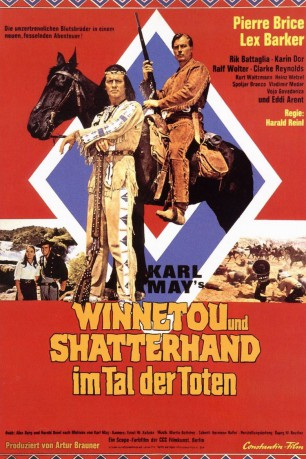

#384 Karl May 17 - Winnetou und Shatterhand im Tal der Toten
Alternativ: Valley of Death, The (Originaltitel)
 
 IMDB-Wertung: 6.1 / 10
IMDB-Wertung: 6.1 / 10  Metascore: 0
Metascore: 0 
Winnetou kommt zu spät, um einen Überfall von Banditen unter der Führung des Schurken Murdock auf die Kriegskasse der Armee zu verhindern. Major Kingsley stirbt in seinen Armen, kann ihm aber zuvor noch mitteilen, wo das Gold versteckt ist. Vor Gericht wird der Major beschuldigt, die Kasse selbst geraubt zu haben und anschließend nach Mexiko geflohen zu sein. Das Verfahren wird unterbrochen, bis Kingleys Tochter Mabel mit einem möglicherweise entlastenden Brief eingetroffen ist. Oberschurke Murdock war bei der Verhandlung anwesend und hat so von dem Brief erfahren. Er überfällt die Postkutsche mit Mabel, um ihr den Brief zu entwenden, wird aber bei seinem Tun vom eintreffenden Old Shatterhand überrascht. Murdock gelingt die Flucht. Mabel weist den Brief dem Gericht vor, gestattet jedoch nicht die Einsichtnahme und erhält eine Frist von 60 Tagen, um weitere Beweise vorzulegen.
Jahr: 1968
Dauer: 89 Minuten
FSK: 12
Land: West-Deutschland Studio: Constantin FilmTonspuren:
Untertitel: Deutsch,
Auflösung: 1080p (1920x816) Größe: 8806 MB
Genre: Western, Abenteuer
Regisseur: Harald Reinl
Drehbuch: Herbert Reinecker, Harald Reinl, Karl May
Soundtrack: Martin Böttcher
Darsteller:
 Lex Barker als Old Shatterhand
Lex Barker als Old Shatterhand Karin Dor als Mabel Kingsley
Karin Dor als Mabel Kingsley Pierre Brice als Winnetou
Pierre Brice als Winnetou Rik Battaglia als Murdock
Rik Battaglia als Murdock- Ralf Wolter als Sam Hawkens
- Clarke Reynolds als Capt. Cummings
- Kurt Waitzmann als Col. Bergson
- Heinz Welzel als Richter
- Branko Spoljar als Cranfield
- Vladimir Medar als Sheriff
- Voyo Goric als Roter Büffel Red Buffalo
- Eddi Arent als Lord Castlepool
- Wolfgang Amerbacher als Sheriff , uncredited
- Vladimir Bacic als Brown , uncredited
- Valent Borovic als Soldier , uncredited
- Miroslav Buhin als 1. Soldat , uncredited
- Hans-Walter Clasen als Brown , uncredited
- Thomas Eckelmann als Winnetou , uncredited
- Dusko Ercegovic als Barkeeper , uncredited
- Nikola Gec als Boone , uncredited
- Heinz Giese als Craig , uncredited
- Hans W. Hamacher als Mann in Kutsche , uncredited
- Knut Hartwig als Major Kingsley , uncredited
- Toni Herbert als Davis , uncredited
- Gert Günther Hoffmann als Old Shatterhand , uncredited
- Ilija Ivezic als Davis , uncredited
- Sime Jagarinac als Weiße Feder White Feather , uncredited
- Sima Janicijevic als Maj. Kingsley , uncredited
- Vida Jerman als Girl in saloon , uncredited
- Claus Jurichs als Cummings , uncredited
- Mirko Kraljev als Siedler Adams , uncredited
- Ivo Kristof als Craigh , uncredited
- Vladimir Leib als Mann in Kutsche , uncredited
- Andreas Mannkopff als Adams , uncredited
- Gerd Martienzen als Cranfield , uncredited
- Slavica Orlovic als Schlankes Reh Slender Deer , uncredited
- Heinz Petruo als Meadows , uncredited
- Joachim Pukaß als Weiße Feder , uncredited
- Rolf Schult als Murdock , uncredited
- Vladimir Simac als Kutscher , uncredited
- Klaus Sonnenschein als Roter Büffel , uncredited
- Drago Sosa als Bandit , uncredited
- Milan Sosa als Meadows , uncredited
- Stjepan Spoljaric als Kutscher , uncredited
- Rajko Zakarija als Piano player in saloon , uncredited
Datei: X:\Person\Karl May\Karl May 17 - Winnetou und Shatterhand im Tal der Toten (1968, FSK12, 1920x816).mkv seit 20.02.2015
Festplatte: HD Collection-7+mehr(A-Z)+Person
 Es gibt insgesamt 20 Filme in der Gruppe 'Person\Karl May'
Es gibt insgesamt 20 Filme in der Gruppe 'Person\Karl May'